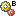

Stücklistenvergleich¶
Durch die Vergleichsoperation für Stücklisten soll es Anwendern ermöglicht werden, sich einen schnellen und detaillierten Überblick über die Unterschiede der Stücklisten von ausgewählten Baugruppen zu verschaffen.
Klicken Sie mit der rechten Maustaste auf den ausgewählten Artikel und wählen Sie im Kontextmenü Strukturvergleich. Für den anstehenden Vergleich wird dieser Artikel zur ausgehenden Baugruppe A und wird automatisch im Eingabefenster zum Stücklistenvergleich eingetragen. Wählen Sie nun über den Katalog die Baugruppe B. Als Auswahl erhalten Sie alle Artikel, die mit diesem System verwaltet werden. Die Checkbox gleiche Positionen anzeigen ist nützlich, um ggf. die Übersichtlichkeit durch ein Ausblenden gleicher Positionen zu erhöhen. Die Anzahl der Baugruppenebenen, die verglichen werden sollen, werden über die Vergleichstiefe eingestellt.
Das Ergebnis des Stücklistenvergleiches wird grafisch in der Strukturansicht angezeigt. Im oberen Bereich der Strukturdarstellung zeigen sich die Ausgangsdaten für den Vergleich. Im mittleren Bereich erfolgt die grafische Darstellung der Vergleichsergebnisse. Dabei werden die Stücklistenpositionen der Baugruppe A den der Baugruppe B gegenübergestellt. Das Vergleichsergebnis wird durch das vorangestellte Icon symbolisiert. Voneinander abweichende Attributwerte werden unter der betreffenden Stücklistenposition anhand des Attributs und der voneinander abweichenden Werten angezeigt. Der untere Bereich umfasst die tabellarische Darstellung des Vergleiches, wobei über die einzelnen Objekte in der Trefferliste die Stücklistenpositionen von den (Unter-)Baugruppen bis hn zur einzelnen Komponente navigiert werden können.
Bedeutung der Icons zur Ergebnisdarstellung beim Stücklistenvergleich
 Icon zum Stücklistenvergleich
Icon zum Stücklistenvergleich- Icon vor den zu vergleichenden Baugruppen.
- Icon “vorhanden nur in Stückliste A”
- Die Position ist nur in A vorhanden.
-  Icon “vorhanden nur in Stückliste B”
- Die Position ist nur in B vorhanden.
- Icon “Artikelunterschied”
- Die Positionen unterscheiden sich durch einen anderen Artikel.
- Icon “Versionsunterschied”
- Die Positionen unterscheiden sich durch eine andere Version des Artikels.
 Icon “Attributsunterschied”
Icon “Attributsunterschied”- Die Positionen unterscheiden sich in den Werten der Positionsattribute.
- Icon “vollständiger Unterschied”
- Die Positionen unterscheiden sich vollständig.
- Icon “Positionsgleichheit”
- Die Positionen beider Stücklisten sind gleich.
Im Stücklistenvergleich zu vergleichende Attribute
Beim Stücklistenvergleich sind die Attribute der jeweiligen Stücklistenpositionen von Bedeutung, die als Baugruppen A und B gegenübergestellt werden. Dies sind in erster Linie die Attribute, die die zu vergleichenden Objekte eindeutig kennzeichnen und somit den Schlüssel zur Identifizierung der Stücklistenkomponente bilden. Im Standard sind das die Baugruppennummer, der Baugruppenindex, die Komponentennummer, der Komponentenindex sowie die Stücklistenposition. Darüber hinaus können alle weiteren beschreibenden Attribute zu den Stücklistenpositionen sowie die Attribute von dem von der Stücklistenposition referenzierten Artikel für den Vergleich herangezogen werden.
Baugruppennummer und/oder Baugruppenindex werden sich im Normalfall voneinander unterscheiden, da das eigentliche Ziel ist, unterschiedliche Baugruppen zu vergleichen.
Der Vergleich setzt bei der Komponentennummer und dem Komponentenindex an, die für die gleiche Stücklistenposition verglichen werden. Bei Gleichheit werden tiefergehend die weiteren Stücklistenpositionsattribute wie Menge und Länge verglichen. Diese Attribute werden in der Standardkonfiguration exemplarisch für den Stücklistenvergleich herangezogen und sind für den konkreten Anwendungsfall ggf. kundenspezifisch anzupassen.
Das Suchen und Vergleichen von gleichen Komponenten mit unterschiedlichen Positionsangaben macht in der Regel keinen Sinn, weil Komponenten bewusst an unterschiedlichen Positionen verbaut worden sein können und Vergleichsangaben wenig hilfreich sind. Aus diesem Grunde werden beim Stücklistenvergleich auch Mehrfachverbauungen an unterschiedlichen Positionen nicht besonders behandelt.
Die Stücklistenpositionen zweier Baugruppen können sich auch durch die eigentlichen Artikelattribute unterscheiden. D.h. bei gleichen Positionen, aber unterschiedlichen Komponenten können neben den Stücklistenpositionsattributen auch die Attribute des betroffenen Artikels vergleichsrelevant werden. Diese Art des Stücklistenvergleichs ist kundenspezifisch auf Grundlage der konkreten Anforderungen zu konfigurieren.
Die Vergleichsergebnisse werden jeweils durch die oben beschriebenen Icons dargestellt.